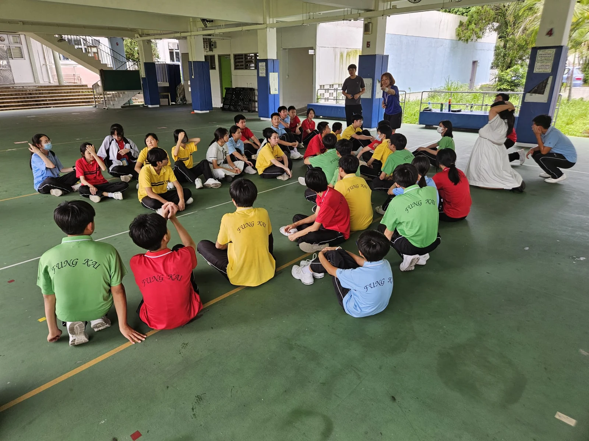

首頁 ／ 機構簡介
我們為香港學校及機構提供兒童課程、到校活動和學習支援，家長亦可向我們查詢。
樂燃教育中心的課程涵蓋藝術、語文、運動及小組訓練，適合不同年齡和學習需要的學生。
學校或機構可按學生年齡、參與人數和活動目標，與我們商議課程內容及形式。
先告訴我們學生的年齡及活動目標，同事會與負責老師了解課程需要，再確認內容、日期及場地安排。

歡迎透過 WhatsApp 聯絡我們，提供學生年齡、活動目標和預計日期。